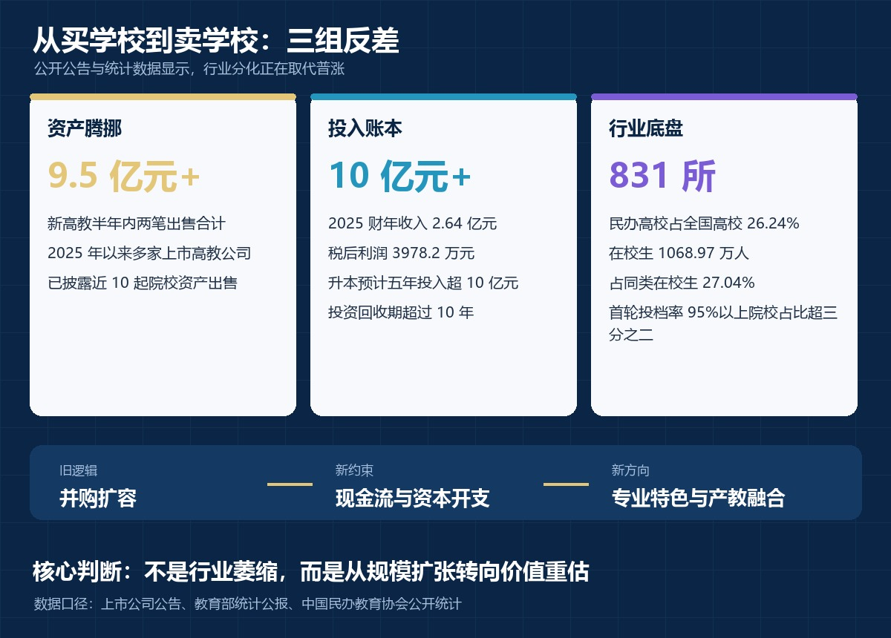

11 月 20 日，新高教集团公告拟以 5.94 亿元出售郑州城市职业学院举办者唯一股东的 100% 股权。这已是该集团今年第二次出售学校相关资产，5 月它以 3.595 亿元出售广西英华国际职业学院及附属中学相关资产，两笔合计超过 9.5 亿元。更值得观察的是，这次拟出售的郑州学校并非亏损资产：公告披露，其 2025 财年收入 2.64 亿元、税后利润 3978.2 万元。昔日热衷于收购学校的教育集团，开始主动把学校摆上货架，这个变化比单笔交易本身更重要。
类似动作并非孤例。希教国际控股、立德教育今年陆续披露院校资产或教育项目出售计划，华媒控股也拟通过股权转让与增资扩股放弃对教育子公司的控制权。把这些信息放在一起看，民办高等教育正在经历一场从规模扩张到价值重估的转向：学校还是好资产，但「好」的标准已经改变。

一、事实层面：资产在腾挪，行业并未收缩
新高教集团的交易结构很清晰。买方为北京博喻见行教育科技有限公司，交易构成港交所规则下的非常重大出售事项，需股东特别大会批准。集团预计录得约 3160 万元一次性账面处置亏损，但可获得约 5.929 亿元现金净流入；其中约 4.057 亿元投向现有院校资本开支，1.6 亿元偿还借款，剩余约 2720 万元补充营运资金。交易完成后，集团保留并运营 6 所院校，资源进一步向本科层次教育集中。
为何要卖掉一所仍在盈利的学校？答案藏在一笔投资账里。集团测算，如果郑州学校维持现有招生规模，并持续提升办学条件至本科层次标准，未来五年预计需要投入超过 10 亿元，即使成功实现升本，投资回收周期也将超过 10 年。河南 2025 年新增投放专科招生计划的院校达到 48 所，其中 42 所为省外院校，区域生源竞争明显加剧。与此同时，集团预计截至 2026 年 8 月 31 日止年度净利润约 3.7 亿至 4.9 亿元，低于上一财年的 8.29 亿元，郑州学校和洛阳学校预计合计产生 2.6 亿至 3.2 亿元商誉减值亏损。
行业底盘却仍在扩大。教育部《2025 年全国教育事业发展统计公报》显示，全国民办高校 831 所，较 2024 年增加 28 所，占全国高校总数 26.24%；民办普通、职业本专科在校生 1068.97 万人，占全国同类在校生 27.04%。中国民办教育协会公开统计显示，2026 年首轮投档率超过 95% 的民办高校占比超过三分之二，首轮投档率达到 100% 的高校数量较 2025 年增长 30%。局部缺额与整体稳定并存，说明变化不是需求消失，而是结构分化。
二、分析：资本逻辑为什么改变
第一，并购只是第一笔支出。十年前，教育集团通过收购成熟院校快速获得生源、学费收入和办学资源，资本市场也习惯用学校数量、在校生规模和新增并购项目衡量增长。但收购价格之后，还有校园建设、教学设备、师资引进、专业建设、实验实训和持续招生投入。当院校数量增加，管理半径扩大，不同区域的生源环境、产业结构和政策要求又难以复制，规模优势会逐渐转化为资本开支与管理压力。
第二，生源竞争从总量转向结构。公开调研显示，2026 年征集志愿中，会计学、财务管理、计算机科学与技术、英语、汉语言文学等开设面广的通用类专业缺额较为集中。部分民办高校面向人工智能、软件工程等热门方向设置专业，但因课程体系、师资和实践条件不足，同样出现征集缺口。家庭开始计算学费与就业回报是否匹配，学校的品牌、区位、专业特色和就业表现，正在取代「本科文凭」这一单一卖点。
第三，重资产模式难以快速调头。学校一旦建成，校舍、设备和教师队伍就形成刚性成本；招生下降时，学费收入会立即承压，但成本不会同比例减少。有研究按每生每年 2 万元学费测算，民办高校在校生约 6000 人是重要盈亏参考线。对处于临界规模附近的学校而言，继续投入可能陷入「勉强生存、难以发展」的两难；出售资产反而成为改善现金流、降低未来投入压力的理性选择。
第四，财务与监管共同收紧约束。并购活跃时期形成的商誉，在学校经营预期下调时会带来减值压力；债务偿还和利息支出却是刚性支出。2021 年修订实施的《民办教育促进法实施条例》，对集团化办学、举办者及实际控制人变更、关联交易等作出更明确规范。教育集团既要具备资金实力，也要具备与办学规模匹配的管理和监督能力。过去靠资本并购快速增加学校数量的模式，开始接受经营与合规的双重检验。
三、趋势判断：从买学校转向办学校
第一，院校资产交易会增多，但含义不是行业退场。地方国有资本、产业资本以及具备办学能力的教育机构，可能成为承接方。希教国际控股宜宾闲置项目拟由当地政府平台公司接手，已经显示出资产重新配置的方向。下一阶段交易的核心不在于「谁卖了多少学校」，而在于谁能更准确判断区域生源、办学成本、政策环境和长期经营能力。资产价格也将从按学生规模定价，转向按现金流、专业壁垒和区位价值定价。
第二，上市教育集团的增长口径会重写。新高教集团把出售所得中的大部分重新投入现有院校资本开支，是一个明确信号：未来增长更多来自现有学校的办学容量、教育质量、专业建设与经营效率，而不是新增学校数量。对教育集团而言，资本配置将从「外延并购」转向「内涵升级」，资产负债表上的学校数量不再是唯一答案，单校质量和现金流质量会更受关注。
第三，数字经济将成为专业重构的关键变量。人工智能、智能制造、新能源等产业加速发展，使高校专业设置与产业人才需求之间的匹配程度成为办学质量的重要指标。但「改名式开设 AI 专业」难以形成竞争力，真正有价值的是课程体系、师资结构、实训平台与真实项目。民办高校若能在专业设置、课程更新、校企协同和就业服务上形成闭环，就能在存量竞争中获得差异化优势。
第四，对粤港澳大湾区而言，机会在于产业场景密集。这里拥有完整的制造业链条、活跃的数字经济企业和大量真实业务场景，院校可以把专业建在产业链上，把课堂搬进项目和车间，把人工智能、数据要素、跨境数字商务等能力转化为可验证的人才培养成果。研究院所观察到的趋势是，未来评价一所民办高校，不会只看它有多少学生、多少专业，而要看它的专业能否对接产业、学生能否获得高质量就业、投入能否形成长期回报。
结语
过去十年，民办教育资本市场讲述的是规模故事：从一所学校到十所学校，从区域办学到全国布局。如今，这个故事正在改成质量故事。出售学校并不必然意味着看空教育，更多时候意味着资本开始重新计算教育资产的价值——不再为规模本身付费，而是为可持续的办学能力付费。
对学校而言，举办者和资本的变化最终要落到教育质量、师生权益和可持续发展上；对产业观察者而言，更该看到这轮调整背后的积极面：当并购退潮，真正办学的能力才会被重新定价。未来民办高教的竞争，很可能不是比谁拥有更多学校，而是比谁真正办好一所学校。
本文所引数据来自上市公司公告、教育部统计公报及公开调研，不同来源口径略有差异，相关分析仅供研究参考，不构成投资建议。